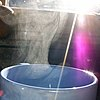

evaporation
process

Source: Wikipedia
Wikipedia Page (Something wrong with this association? Let us know.)
Wikidata Page (Something wrong with this association? Let us know.)
Occurs in:
- land_vegetation_canopy_water_evaporation__volume_flux
- land_surface_water_evaporation__domain_time_integral_of_volume_flux
- land_surface_water_evaporation__mass_flux
- land_surface_water_evaporation__volume_flux
- land_surface_water_evaporation__potential_volume_flux
- sea_surface_water_evaporation__mass_flux
- sea_surface_water_evaporation__volume_flux
- soil_surface_water_evaporation__volume_flux
- soil_surface_water_evaporation__time_integral_of_volume_flux
- soil_plant_residue_water_evaporation__volume_flux
- plants~living_water_evaporation__volume_flux
- land_surface_water_evaporation__potential_energy_flux
- land_vegetation_canopy_water_evaporation__energy_flux
- land_surface_soil~bare_water_evaporation~direct__energy_flux
- land_surface_water~intercepted_evaporation__volume_flux
- land_surface_soil_water_evaporation__volume_flux